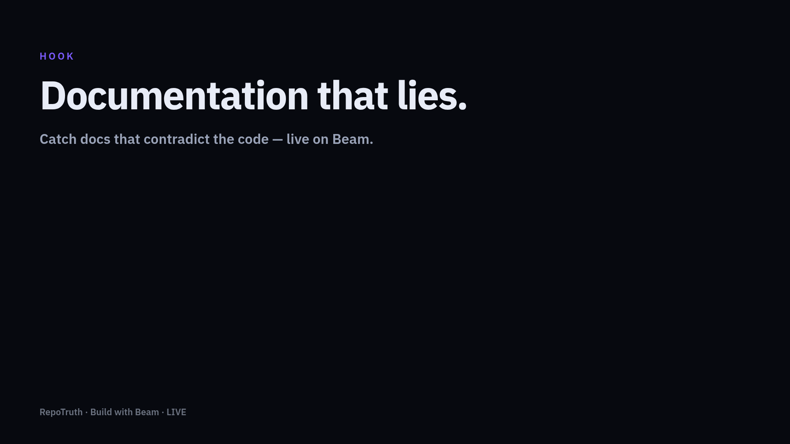
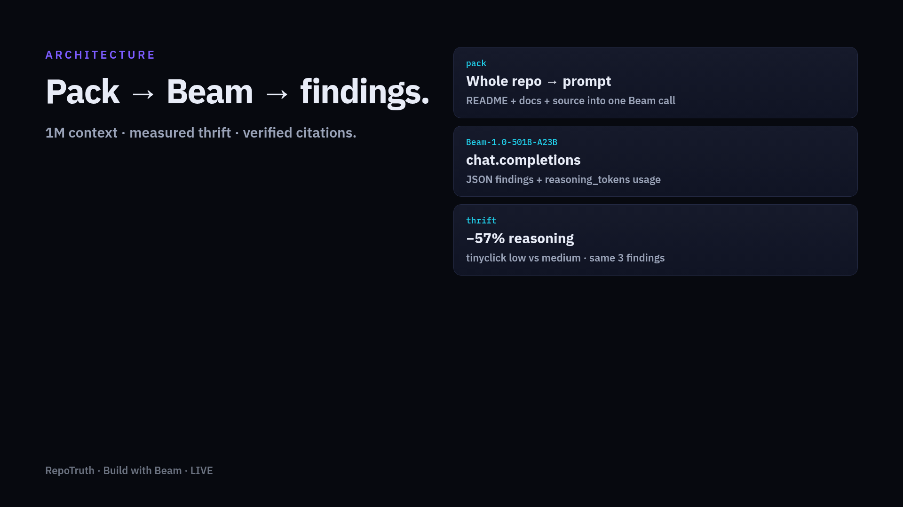
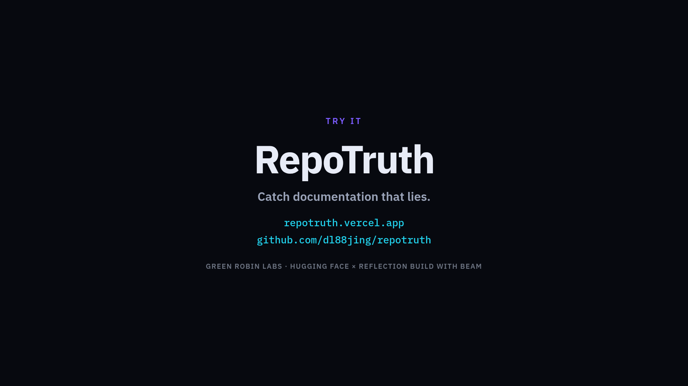

RepoTruth · Build with Beam · LIVE
Demo walkthrough
Live app · repotruth.vercel.app
Screen recording
Live Beam audit · tinyclick · effort low
Screen recording
GitHub mode · paste a public repo
Screen recording

Architecture · Pack → Beam → findings
RepoTruth

Try it · repotruth.vercel.app
Green Robin Labs